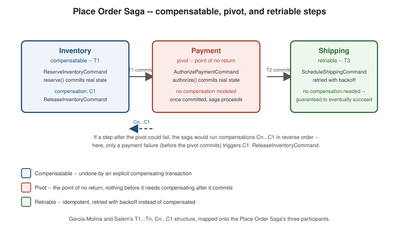

Sagas
|
This content was generated with the assistance of AI and should be verified against the official documentation before being relied on in production. |
Aggregates ends on a corollary that this page exists to resolve: one transaction touches exactly one aggregate, so a business operation that must coordinate several aggregates — several bounded contexts, several microservices, several databases — can never be a single ACID transaction. A saga is how that operation still gets done anyway: a message-driven sequence of local transactions, one per participant, each committing on its own, with the sequence as a whole giving up isolation in exchange for never holding a lock across a network call. The running example throughout is the Place Order Saga already named on Strategic Design's context map: reserve inventory, authorize payment, schedule shipping, approve the order — shown here with the same Java 21 / Spring Boot 4.1.x / Spring Data JPA / Spring Modulith 2.x / Spring for Apache Kafka 4.1.x baseline as the rest of this section.
A saga is a sequence of local transactions, not a distributed one
Garcia-Molina and Salem’s 1987 paper — the original source of the pattern, long before microservices existed — defined a saga as a long-lived transaction split into a sequence of sub-transactions T1…Tn, each of which
can commit independently, with the guarantee that either all of them commit or the ones that already committed
are undone by a matching compensating transaction. Richardson’s Microservices Patterns chapter 4 restates
this for a microservices world: instead of holding a two-phase-commit coordinator open across every participant
(the option Why Not Distributed
Transactions rules out), each participant commits its own local transaction and publishes a message that
triggers the next step — nothing is ever held open across a network call, so by the time step two starts, step
one is already durably committed, for better or worse.
The Place Order Saga has four steps, using the canonical commands and replies
Structuring the Code and
Aggregates already established Order, OrderLine, CustomerId
and Money for:
// Inventory (compensatable step)
record ReserveInventoryCommand(OrderId orderId, List<OrderLine> lines) { }
record InventoryReserved(OrderId orderId) { }
record InventoryReservationFailed(OrderId orderId, String reason) { }
record ReleaseInventoryCommand(OrderId orderId) { } // compensation
// Payment (pivot step -- no compensation modeled)
record AuthorizePaymentCommand(OrderId orderId, CustomerId customerId, Money amount) { }
record PaymentAuthorized(OrderId orderId) { }
record PaymentAuthorizationFailed(OrderId orderId, String reason) { }
// Shipping (retriable step)
record ScheduleShippingCommand(OrderId orderId, Address address) { }
record ShippingScheduled(OrderId orderId) { }
record ApproveOrderCommand(OrderId orderId) { }
record RejectOrderCommand(OrderId orderId, String reason) { }Happy path: Order is created APPROVAL_PENDING (Aggregates's
Order.place), inventory is reserved, payment is authorized, shipping is scheduled, and the order is approved — four local transactions, four separate commits, no distributed transaction anywhere. Failure path: if inventory
reservation fails, there is nothing yet to undo, so the saga rejects the order directly; if payment authorization
fails after inventory was already reserved, that earlier commit is real and durable, and undoing it needs an
explicit, separate transaction of its own — ReleaseInventoryCommand. That asymmetry, and exactly why isolation
is the one ACID property a saga cannot offer, is what the rest of this page works through.
Compensating transactions: T1…Tn, Cn…C1
Garcia-Molina and Salem’s original formulation is precise about the failure shape: if sub-transaction Ti fails
after T1 through Ti-1 already committed, the saga runs compensations in strict reverse order,
Ci-1…C1, undoing each already-committed step from the most recent backwards. Richardson’s Microservices
Patterns 4.1 sharpens this into three structural roles a step can play, and the Place Order Saga’s three steps
are, not coincidentally, one clean example of each:
-
Compensatable transactions are followed by other transactions that might fail later, so they need a compensation that can undo them after the fact. Reserve inventory is exactly this: it commits real state (stock held against
orderId), and if a later step fails, that hold must be released —ReleaseInventoryCommandisReserve inventory’s compensation, `C1to itsT1. -
Pivot transactions are the point of no return: once the pivot commits, the saga is guaranteed to run to completion, and nothing before it needs compensating anymore. Authorize payment is the pivot here, exactly as the canonical domain model specifies — no compensation is modeled for it, a deliberate business decision: once a payment is authorized, the remaining steps are engineered never to fail in a way that would need reversing the charge; if they did, the response is a human-in-the-loop refund process, not an automated compensation on the saga’s happy path.
-
Retriable transactions are guaranteed to eventually succeed, so instead of a compensation they get a retry loop. Schedule shipping is this: it comes after the pivot, so the saga cannot roll it back, only keep retrying (with backoff, at the messaging layer) until the shipping provider’s API accepts the request — there is no
CancelShippingCommandbecause there is nothing to compensate, only a request retried until it succeeds. Making a transaction retriable costs something at design time: it must be idempotent, since the same command may legitimately be delivered and processed more than once.
The figure below maps all three roles onto the saga’s three participants side by side.

Choreography vs. orchestration
The Place Order Saga’s four steps can be sequenced two structurally different ways, and the transport-level mechanics of each — Kafka topics vs. RabbitMQ exchanges, command queues vs. event buses — are already covered in depth by Messaging Patterns in Practice’s saga choreography vs. orchestration section; this page does not repeat that broker-level detail, only the design trade-off itself, restated against the running domain.
Choreography has no central coordinator: Order publishes OrderPlaced, Inventory reacts and publishes
InventoryReserved (or InventoryReservationFailed), Payment reacts to that, and so on — each participant
knows only the events it subscribes to, never the saga as a whole. Every message carries a correlation ID
(orderId itself, here) so each handler can group messages belonging to one saga instance apart from every other
order’s messages in flight concurrently. Its benefits are real: adding a reactive participant costs nothing on
the existing services, and coupling stays loose since no participant references another’s type or endpoint, only
event names. Its drawbacks are just as real: there is no single place to read "what does placing an order do end
to end," and it is easy to introduce an unnoticed cyclic dependency between participants' event handlers.
Orchestration puts a PlaceOrderSaga orchestrator in charge instead: it sends ReserveInventoryCommand,
waits for InventoryReserved or InventoryReservationFailed, sends AuthorizePaymentCommand next, and so on — modeled explicitly as the state machine below. Each participant becomes a plain command handler that does its own
local transaction and replies, needing no knowledge of the saga’s overall shape, which keeps the aggregates and
services simpler than choreography’s fan-out of cross-participant subscriptions. The risk it introduces is the
mirror image: if the orchestrator starts making business decisions that belong on the participants, it turns
into a "smart orchestrator, dumb services" anti-pattern — its job should stay limited to sequencing, which
command to send next and which compensation to trigger on a failure reply.
This page follows Richardson’s own recommendation: orchestrate all but the simplest sagas. A two-step saga with no compensation to trigger is a fine candidate for choreography; the four-step Place Order Saga, with a compensatable step, a pivot, and a retriable step to sequence correctly under failure, is exactly the case where an explicit orchestrator earns back more than it costs.
Sagas are ACD, not ACID
A saga keeps three of the four ACID properties and gives up the fourth entirely: Atomicity (either every step completes or its compensations undo the ones that ran), Consistency (each local transaction leaves its own aggregate in a valid state), and Durability (each committed step stays committed) all hold. Isolation does not — there is no way to make four separate local transactions, running at different times against different databases, behave as if no other transaction could see their intermediate, partially-completed state. Richardson’s Microservices Patterns 4.2 names three concrete anomalies this lack of isolation opens up, and each has a version that could actually happen to the running domain:
-
Lost update. One saga’s write silently overwrites another’s without either being aware of the collision. Picture a hypothetical
CancelOrderSagathat refunds a cancelled order by directly incrementing a customer’s stored account credit, running concurrently withPlaceOrderSagareserving inventory for a new order from the same customer against a shared "available credit" figure. If both sagas read the same starting balance, compute an updated value independently, and overwrite the row rather than applying an atomic increment, whichever write lands second wins outright — the other saga’s update is lost with no error raised anywhere. -
Dirty read. One saga’s transaction reads another saga’s uncommitted, not-yet-finalized data. If a hypothetical order-history read model queried
Order.statusmid-saga and treatedAPPROVAL_PENDINGas though it meant "approved" — rather than "`PlaceOrderSaga` has only reserved inventory so far" — aCancelOrderSagaracing to cancel that same order based on the dirty read could act on a state the order might never reach if payment authorization later fails. -
Fuzzy read. Two reads of the same data within one saga return different results because another saga committed a change in between. If
PlaceOrderSaga’s payment step re-checked `Order.lines()right before authorizing payment, and a concurrentCancelOrderSagahad, in between the saga’s two reads, already cancelled and released those lines, the payment step would authorize a charge against line items that no longer represent what will actually ship — the same order read twice, two different truths.
None of these anomalies are exotic; they are the ordinary cost of dropping isolation, and the countermeasures below exist to close the gaps they open, without paying for a distributed transaction to get isolation back.
The six countermeasures
Richardson’s Microservices Patterns 4.2 catalogs six countermeasures for saga anomalies, none of which restore true isolation — each closes a specific anomaly by a different, more local means.
Semantic lock. An aggregate exposes an explicit "pending" flag as part of its own state, so other
transactions can tell a saga is still in flight and act accordingly instead of treating the record as settled.
This is precisely what OrderStatus.APPROVAL_PENDING already is: for as long as an Order sits in
APPROVAL_PENDING, any code that reads its status — a CancelOrderSaga, a read-model projector — has an
explicit signal that PlaceOrderSaga has not finished yet, closing exactly the dirty-read scenario above.
Order.approve()/reject()/cancel() guarding their own valid starting statuses (via requireStatus) is the
semantic lock enforced in code, not merely documented in a comment.
Commutative updates. If two operations can be applied in either order and still land on the same final
result, their relative ordering stops mattering, and the lost-update anomaly above disappears by construction.
Crediting and debiting the same balance are commutative (balance + 10 - 3 equals balance - 3 + 10); the
lost-update example above only broke because the two sagas each overwrote a locally computed value instead of
issuing a commutative adjustCredit(delta) operation the persistence layer applies atomically.
Pessimistic view. Reorder a saga’s steps so that the one at greater risk of violating an invariant runs
first, narrowing the window in which a dirty read could see something wrong. Running a reserve credit step
before the riskier cancel order step a CancelOrderSaga might otherwise race against shrinks the exposure
window instead of eliminating it — a pessimistic view about ordering, not a real database lock.
Reread value. Before overwriting a value, reread it and check it has not changed since it was first read;
abort and retry if it has. This is Order’s own `@Version mechanism from
Aggregates, applied at saga level: a step about to write Order
state rereads the current row, compares versions, and restarts its decision against fresh data rather than
blindly committing over a value another transaction changed underneath it.
Version file. Record every operation applied to an entity, in order, so conflicting operations can be reordered or reconciled deterministically at commit time rather than one silently clobbering the other. The outbox row Transactional Outbox writes alongside each aggregate change is close in spirit: an ordered, append-only record a consumer can replay in sequence instead of only ever seeing the latest overwritten state.
By value. Pass enough business data as part of a command (rather than only an identifier) that the receiving
step can decide without a second round trip that could itself race against a concurrent change.
AuthorizePaymentCommand(OrderId orderId, CustomerId customerId, Money amount) already does this: Payment
authorizes exactly the amount handed to it at saga-start time, rather than re-reading `Order’s current total
moments later and risking a fuzzy read.
Transactional messaging, orchestrator persistence, and idempotent participants
None of the above matters if the messages that drive a saga can be lost or duplicated silently, which makes
transactional messaging a prerequisite for every countermeasure above, not an optional extra — Transactional Outbox is how each participant, including
the PlaceOrderSaga orchestrator itself, guarantees a state change and the message announcing it commit or roll
back together, so a crash between "reserve inventory committed" and "reply sent" can never happen silently.
The orchestrator needs a second piece of durability the participants do not: its own persisted state, so it
can resume a saga that was mid-flight when the process crashed. A SagaState entity — orderId, the current
SagaStatus, and enough context to know which command is outstanding — is written in the same local
transaction as each command the orchestrator sends, exactly like any other aggregate’s persistence. On restart,
the orchestrator reloads every non-terminal SagaState row and resumes it from wherever it left off — reissuing
the outstanding command if no reply arrived, or advancing to the next step if a reply is sitting unprocessed.
Every saga participant is, from the messaging infrastructure’s point of view, an idempotent command handler:
ReserveInventoryCommand, AuthorizePaymentCommand, and ScheduleShippingCommand may each be delivered more
than once (a redelivery after a slow acknowledgment, an orchestrator retry after an apparent timeout), and a
handler that is not idempotent would reserve the same stock twice or charge the same card twice. In practice
each handler keys its work off orderId and checks whether that order already has an outstanding or completed
reservation/authorization/shipment before doing anything, rather than assuming every delivery is the first.
Testing a saga is testing a state machine, not business logic end to end with real participants wired up:
given the orchestrator is in some starting state, when a specific reply arrives, then it transitions to the
expected next state and sends the expected next command or compensation — no broker, no database, no real
InventoryService needed. A short JUnit sketch of that given/when/then shape, on the failure path specifically:
@Test
void paymentFailureTriggersInventoryReleaseThenRejection() {
// given: the saga has already reserved inventory
SagaState state = SagaState.reservingInventory(orderId);
state.onInventoryReserved();
assertThat(state.status()).isEqualTo(SagaStatus.AUTHORIZING_PAYMENT);
// when: payment authorization fails
List<Object> commands = state.onPaymentAuthorizationFailed(new PaymentAuthorizationFailed(orderId, "declined"));
// then: the saga compensates by releasing inventory, then rejects the order
assertThat(state.status()).isEqualTo(SagaStatus.REJECTING_INVENTORY);
assertThat(commands).containsExactly(new ReleaseInventoryCommand(orderId));
}Each transition is a plain, synchronous method call on SagaState, which is what makes the state machine fast
and cheap to verify exhaustively, leaving each participant’s own local-transaction behavior to be tested
independently.
Where durable-execution engines fit
Nothing above requires a dedicated saga framework — the PlaceOrderSaga below is a plain Spring Boot state
machine backed by a JPA-persisted SagaState, a legitimate, common way to run a saga in production. Several
purpose-built engines and libraries exist for teams that want the persistence-and-resume machinery provided
rather than hand-rolled, worth naming without any being required here: Temporal (temporal.io)
and Camunda (camunda.com) are general durable-execution/workflow engines that fit sagas
well; Eventuate Tram Sagas (eventuate.io), from Richardson himself, is a Java library
purpose-built for exactly this orchestration shape; Axon (axoniq.io) ships saga
support built into its CQRS/event-sourcing framework. Narayana LRA differs architecturally rather than merely
by vendor: a coordinator calls each participant’s registered compensating action after the fact, rather than an
orchestrator sequencing commands up front — Why Not Distributed Transactions covers why
LRA fits a long-running action XA cannot, and
Narayana LRA shows the Quarkus
realization directly.
Code: PlaceOrderSaga as a state machine
The orchestrator models the saga as an enum-backed state machine, with a SagaState entity persisted alongside
every transition so the orchestrator can resume after a crash. SagaStatus uses a plain enum rather than a
sealed interface here because every state genuinely holds the same shape of data (just orderId and a status),
which is exactly the case a flat enum with behavior methods reads more idiomatically than a sealed hierarchy
would:
package com.example.order.saga;
import com.example.order.domain.OrderId;
import com.example.inventory.ReleaseInventoryCommand;
import com.example.inventory.ReserveInventoryCommand;
import com.example.inventory.InventoryReservationFailed;
import com.example.inventory.InventoryReserved;
import com.example.payment.AuthorizePaymentCommand;
import com.example.payment.PaymentAuthorizationFailed;
import com.example.payment.PaymentAuthorized;
import com.example.shared.CustomerId;
import com.example.shared.Money;
import com.example.shared.Address;
import com.example.shipping.ScheduleShippingCommand;
import com.example.shipping.ShippingScheduled;
import jakarta.persistence.Entity;
import jakarta.persistence.EnumType;
import jakarta.persistence.Enumerated;
import jakarta.persistence.Id;
import java.util.List;
public enum SagaStatus {
RESERVING_INVENTORY, AUTHORIZING_PAYMENT, SCHEDULING_SHIPPING,
ORDER_APPROVED, REJECTING_INVENTORY, ORDER_REJECTED
}
@Entity
public class SagaState {
@Id
private OrderId orderId;
@Enumerated(EnumType.STRING)
private SagaStatus status;
private CustomerId customerId;
private Money amount;
private Address shippingAddress;
protected SagaState() {
// JPA
}
public static SagaState start(OrderId orderId, CustomerId customerId, Money amount, Address shippingAddress) {
SagaState state = new SagaState();
state.orderId = orderId;
state.customerId = customerId;
state.amount = amount;
state.shippingAddress = shippingAddress;
state.status = SagaStatus.RESERVING_INVENTORY;
return state;
}
// Every handler below starts with the same guard: a reply that arrives when the saga is already
// past the step it answers -- a broker redelivery, or the second answer to a retried command -- is
// not an error, it is ignored. Throwing here would roll the reply consumer back and make it
// re-consume the same message forever; ignoring it is what makes the orchestrator itself
// idempotent under the at-least-once delivery the section above assumes.
// Advances RESERVING_INVENTORY -> AUTHORIZING_PAYMENT, the pivot step.
public List<Object> onInventoryReserved(InventoryReserved reply) {
if (status != SagaStatus.RESERVING_INVENTORY) {
return List.of(); // late or duplicate reply -- already handled
}
status = SagaStatus.AUTHORIZING_PAYMENT;
return List.of(new AuthorizePaymentCommand(orderId, customerId, amount));
}
// Nothing committed yet to compensate -- rejects directly.
public List<Object> onInventoryReservationFailed(InventoryReservationFailed reply) {
if (status != SagaStatus.RESERVING_INVENTORY) {
return List.of();
}
status = SagaStatus.ORDER_REJECTED;
return List.of(new RejectOrderCommand(orderId, reply.reason()));
}
// Pivot committed -- advances to the retriable step.
public List<Object> onPaymentAuthorized(PaymentAuthorized reply) {
if (status != SagaStatus.AUTHORIZING_PAYMENT) {
return List.of();
}
status = SagaStatus.SCHEDULING_SHIPPING;
return List.of(new ScheduleShippingCommand(orderId, shippingAddress));
}
// Compensates the compensatable step, then heads to ORDER_REJECTED.
public List<Object> onPaymentAuthorizationFailed(PaymentAuthorizationFailed reply) {
if (status != SagaStatus.AUTHORIZING_PAYMENT) {
return List.of();
}
status = SagaStatus.REJECTING_INVENTORY;
return List.of(new ReleaseInventoryCommand(orderId));
}
// Compensation acknowledged -- the saga is now settled as rejected.
public List<Object> onInventoryReleased() {
if (status != SagaStatus.REJECTING_INVENTORY) {
return List.of();
}
status = SagaStatus.ORDER_REJECTED;
return List.of(new RejectOrderCommand(orderId, "payment authorization failed"));
}
// Last step done -- approves the order.
public List<Object> onShippingScheduled(ShippingScheduled reply) {
if (status != SagaStatus.SCHEDULING_SHIPPING) {
return List.of();
}
status = SagaStatus.ORDER_APPROVED;
return List.of(new ApproveOrderCommand(orderId));
}
public SagaStatus status() {
return status;
}
}
record RejectOrderCommand(OrderId orderId, String reason) { }
record ApproveOrderCommand(OrderId orderId) { }SagaState is a plain Jakarta Persistence entity persisted by Spring Data JPA (see Spring Data JPA reference — Persisting entities) and driven from @Transactional handlers — see Spring Framework reference — Declarative transaction management.
PlaceOrderSaga itself is the thin orchestrator that starts a SagaState, persists it, and reacts to each
inbound reply by calling the matching handler and sending whatever commands come back — the same
"load, invoke a behavior, save, publish" shape
Structuring the Code's application services already
follow, applied to saga state instead of a domain aggregate:
package com.example.order.saga;
import org.springframework.stereotype.Component;
import org.springframework.transaction.annotation.Transactional;
@Component
public class PlaceOrderSaga {
private final SagaStateRepository sagaStateRepository;
private final SagaCommandGateway sagaCommandGateway; // outbound port: sends a command to its participant
public PlaceOrderSaga(SagaStateRepository sagaStateRepository, SagaCommandGateway sagaCommandGateway) {
this.sagaStateRepository = sagaStateRepository;
this.sagaCommandGateway = sagaCommandGateway;
}
@Transactional
public void handle(PaymentAuthorizationFailed reply) {
SagaState state = sagaStateRepository.findById(reply.orderId());
sagaCommandGateway.sendAll(state.onPaymentAuthorizationFailed(reply)); // triggers ReleaseInventoryCommand
sagaStateRepository.save(state);
}
// handle(InventoryReserved), handle(InventoryReservationFailed), handle(PaymentAuthorized),
// handle(ShippingScheduled) follow the identical shape: load, delegate to SagaState, send, save.
}InventoryService is one participant’s command handler, including its release compensation:
package com.example.inventory;
import com.example.order.domain.OrderId;
import com.example.order.domain.OrderLine;
import org.springframework.stereotype.Service;
import org.springframework.transaction.annotation.Transactional;
import java.util.ArrayList;
import java.util.List;
@Service
public class InventoryService {
private final InventoryItemRepository inventoryItemRepository;
private final SagaReplyGateway sagaReplyGateway; // outbound port: sends a reply back to the orchestrator
public InventoryService(InventoryItemRepository inventoryItemRepository, SagaReplyGateway sagaReplyGateway) {
this.inventoryItemRepository = inventoryItemRepository;
this.sagaReplyGateway = sagaReplyGateway;
}
@Transactional
public void reserve(ReserveInventoryCommand command) {
if (inventoryItemRepository.hasReservationFor(command.orderId())) {
return; // already handled -- idempotent under redelivery
}
// Two passes on purpose: check every line first, mutate only once all of them can be
// reserved. A single pass that reserved line by line and caught the failure part-way
// would commit the earlier lines' reservations while replying "failed" -- stock the saga
// would never release, since it rejects without compensating a step it believes never ran.
List<InventoryItem> items = new ArrayList<>();
for (OrderLine line : command.lines()) {
InventoryItem item = inventoryItemRepository.findByProductId(line.productId());
if (!item.canReserve(line.quantity())) {
sagaReplyGateway.send(new InventoryReservationFailed(command.orderId(),
"insufficient stock for product " + line.productId().value()));
return; // nothing has been mutated, so there is nothing to undo
}
items.add(item);
}
for (int i = 0; i < items.size(); i++) {
items.get(i).reserve(command.orderId(), command.lines().get(i).quantity());
}
sagaReplyGateway.send(new InventoryReserved(command.orderId()));
}
/** Compensation: undoes reserve(), called only after a later step failed. */
@Transactional
public void release(ReleaseInventoryCommand command) {
inventoryItemRepository.findReservationsFor(command.orderId())
.forEach(reservation -> reservation.release(command.orderId()));
sagaReplyGateway.send(new InventoryReleased(command.orderId()));
}
}
record InventoryReleased(OrderId orderId) { }For contrast, a choreography-style variant of just the first two steps shows the same reservation without any
orchestrator at all: Order publishes OrderPlaced as a domain event
(Domain Events), and Inventory reacts to it directly, with no
command, no reply gateway, and no SagaState in sight:
package com.example.inventory;
import com.example.order.domain.event.OrderPlaced;
import org.springframework.modulith.events.ApplicationModuleListener;
import org.springframework.stereotype.Component;
@Component
class InventoryEventListener {
private final InventoryService inventoryService;
InventoryEventListener(InventoryService inventoryService) {
this.inventoryService = inventoryService;
}
@ApplicationModuleListener
void on(OrderPlaced event) {
inventoryService.reserve(new ReserveInventoryCommand(event.orderId(), event.lines()));
}
}InventoryService.reserve itself is unchanged between the two styles — what differs is only how it gets
called: a saga orchestrator’s explicit command in the orchestration example above, or an
@ApplicationModuleListener reacting to `Order’s own event here. That single difference is the whole
choreography-vs-orchestration trade-off made concrete in code.
Mermaid: the saga’s state machine and its failure path
The happy path and both failure branches, as SagaStatus transitions:
The sequence below walks the payment-failure branch specifically, with the inventory-release compensation shown explicitly as its own round trip after the pivot step fails: